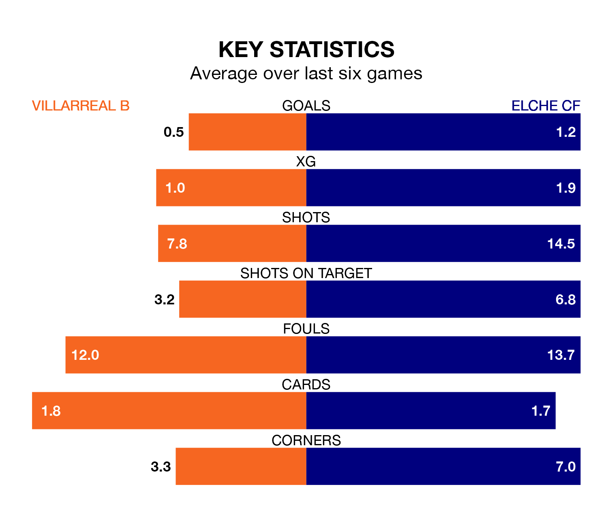

Relegation candidates Villarreal B face a challenge against high-flying Elche CF at Estadio de la Cerámica on Sunday.
Villarreal B are 19th in the Segunda División table, and have picked up seven wins and nine draws in their 29 games to date.
Elche, meanwhile, are fourth in the standings with 47 points, having won 13 and drawn eight, and are three points behind table-toppers Leganés.
In the last 10 years, Villarreal B and Elche have played each other on six occasions. They won two each, and they drew twice.
On average, Villarreal B scored 0.8 goals and Elche 0.8 in those matches.
Their last meeting was on August 26, when Elche won 1-0 at home.
In Álex Forés Mendoza, Villarreal B have one of the league's sharpest shooters so far this season. He has notched 11 goals in 29 appearances, to sit fourth in the scoring charts.
His goal rate of one every 187 minutes is slightly quicker than that of Óscar Plano, Elche's top scorer with a goal every 157 minutes, and a total of seven goals in 21 games.
With 28 goals in 29 games so far this season, the home side are scoring at below the league average rate with 1.0 goals per game. And they are conceding more than average, letting in 43 goals at a rate of 1.5 per game.
The visitors are also below average scorers, with 1.0 goal per game, compared to a league average of 1.1. They have conceded 0.8 goals per game.
Villarreal B are in disappointing form in the Segunda División, with one win and three draws from their last six games.
With four wins and a draw over that period, Elche's form is much better – they have taken 13 points from 18, compared to Villarreal B's six.
Villarreal B's last match was on March 2, a 2-0 loss against CD Eldense.
Elche beat AD Alcorcón 3-0 last time out, on Monday, with Morad Daoudi El Ghezouani, Nicolás Fernández and Tete Morente on the scoresheet.
Sunday's match will be refereed by Rubén Ávalos Barrera, who has taken charge of 14 Segunda División games so far this season, issuing one red card and booking 69 players. He has awarded seven penalties.
The last Villarreal B game Ávalos Barrera refereed was a 4-1 away loss to FC Cartagena on January 14. His last Elche match was their 2-1 win at home against CD Tenerife on October 28.
Updated: 09:34 (UTC), 08/03/24